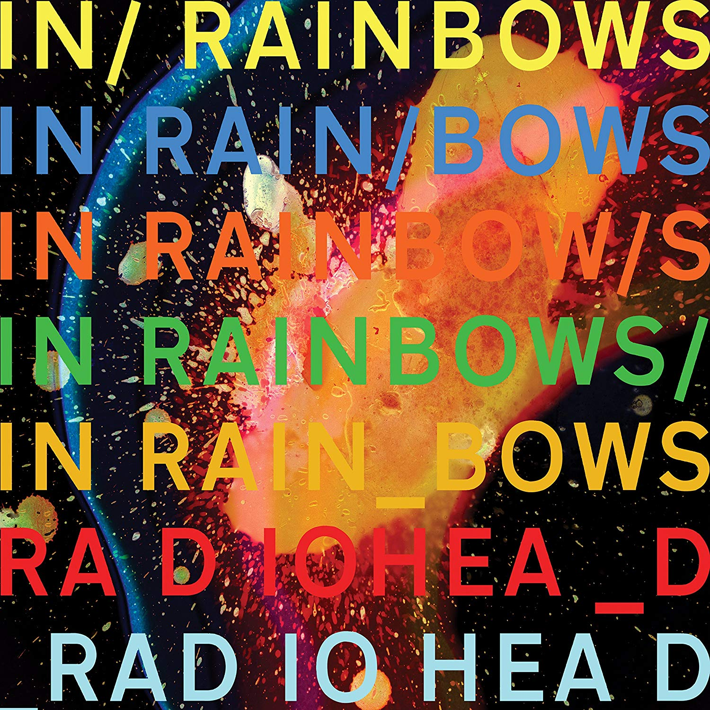

Jigsaw Falling Into Place
Композиция была выпущена 14 января 2008 года как ведущий сингл с седьмого студийного альбома In Rainbows.
Интересный факт: Группа «Radiohead» впервые выступила с песней «Jigsaw Falling on Place» во время тура в 2006 году;
песня имела рабочее названием «Open Pick».